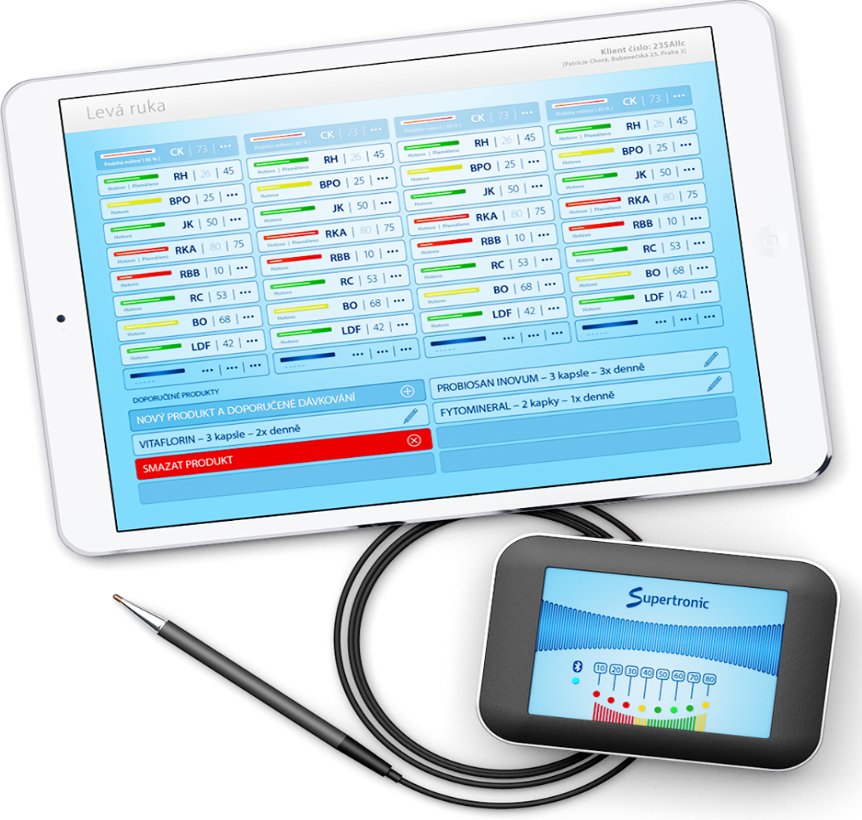

EAV – energetická diagnostika
Pomocí měření přesně definovaných akupunkturních bodů se zjišťuje energetický stav akupunkturních drah, vnitřních orgánů, jež jsou s těmito drahami spojeny, a také stav anatomicky či funkčně spojených tkání.
Naměřené hodnoty nám umožňují rozpoznat, zda se orgány, funkční systémy či tkáně nacházejí ve stavu podráždění, zánětu, normální adaptační funkce nebo degenerativním stavu.
Energetická diagnostika z pohledu Vollovy metody zkoumá odpověď akupunkturních bodů na průchod stejnosměrného proudu o velmi nízké voltampérové charakteristice. Tímto způsobem dostáváme obraz jak o energetickém stavu akupunkturních drah, tak o stavu orgánů a tkání, jež jsou k drahám přiřazeny. Pro diagnostiku EAV používáme originálně vyvinutý měřicí přístroj Supertronic.

Časté otázky
Kdy je vyšetření Supertronicem nejvíce přínosné?
Největší přínos této metody je v prevenci, a také tam, kde klasická medicína neodhalí příčinu nemoci nebo nezná prostředky k jejímu vyléčení.
Je klasická a nekonvenční medicína v rozporu, nebo se doplňují?
Klasická a nekonvenční medicína si nekonkurují, nejsou v žádném rozporu. Různými úhly pohledu rozšiřují možnosti jak diagnostiky nemoci, tak i léčby. Jejich současné použití je pro vyšetřovaného člověka ideální, protože umožňuje s vyšší účinností zjistit příčinu patologie a také navrhne léčbu šitou na míru.
Jak se připravit na vyšetření?
Vyšetřovaný by neměl přijít fyzicky či psychicky vyčerpán, ve stádiu akutního infekčního onemocnění, min. 2 hodiny před vyšetřením nekouřit a nepít kofeinové ani energetické nápoje. Na ruce a nohy neaplikovat žádný krém. V den vyšetření brát jen nezbytně nutné léky, žádné jiné léky ani potravinové doplňky.
Jaké jsou limity vyšetření a koho netestujeme?
Limitem vyšetření je věk (velikost prstů a spolupráce malých dětí), patologické procesy kůže v místě měřených bodů (ekzémy, vyrážky, jizvy), těhotné ženy (problémy s interpretací). Netestujeme pacienty s kardiostimulátory či jinými řídícími elektronickými přístroji a pacienty s epileptickými záchvaty.